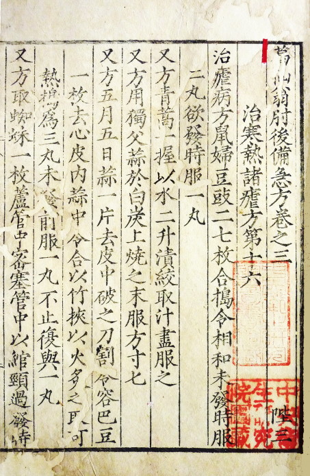

In 2015, 屠呦呦 (Tu Youyou) ended her Nobel lecture with a recitation of a poem by 王之渙 (Wang Zhihuan), a Tang
dynasty
poet:
登鹳雀楼
白日依山尽
黄河入海流
欲穷千里目
更上一层楼
Climbing the Stork Tower
The sun along the mountain bows;
The Yellow River seawards flows.
You will enjoy a grander sight,
if you climb to a greater height.
The poem emblematizes Tu Youyou's road to discovering artemisinin - at once deeply rooted in the spirit
of
Chinese tradition while also driven by the pursuit of knowledge and innovation. I find her scientific
journey to be
almost mythical, and count her as one of my greatest inspirations (as an aspiring researcher myself).
Born in 1930 in Ningbo, Zhejiang, Tu Youyou set out to study medicine after recovering from a 2 year
bout of Tuberculosis that kept her out of school. She studied both both Western and traditional Chinese
medicine at the Department of Pharmacy at the Medical School of Peking University. About her time
studying Chinese medicine, she cited the following Shakespeare quote:
凡是过去，皆为序章
What's past is prologue
Indeed, it's hard to have predicted exactly how the past would have led to the work she did, but it all
came together in a beautiful way. When the Cultural Revolution came, academic research stalled, and her
husband was sent to "re-education" camp, causing further difficulties in how to take care of her two
young children. Soon, though, Tu Youyou became appointed to head the traditional Chinese medicine arm of
Project 523, a secret military project to find a cure for malaria.
It was the late 1960s in the jungles of Vietnam, and malaria had been ravaging the troops of the Viet
Cong. Ho Chih Minh had requested help from Mao Zedong - malaria was becoming resistant to chloroquine,
and a new cure was needed.
The hunt for a cure had been afoot for a while. Worldwide, scientists had tested over 240,000 different
compounds, but none had been successful. Taking a different path from Western medicine, Tu Youyou and
her team turned towards traditional Chinese medicine to find a cure. She and her team consulted
traditional medicine experts and scoured ancient texts for clues, collecting a list of over 2000 herbal
and animal remedies that had been used to treat malaria. A promising lead came from a 4th century text
called
The Handbook of Prescriptions for Emergencies, by Ge Hong.
青蒿一握 以水二升渍 绞取汁 尽服之
Take a handful of qinghao, place in two liters of water, squeeze it dry, then consume it all

The usual method of extracting the active compounds from herbal remedies was to boil them in water, but
interestingly this description called to just soak it. Tu Youyou suspected that heat would destroy the
active compounds, and so she distilled it using ethyl ether (a boiling point of 34.6°C).
In 1971, sample 191 of the qinghao extract was tested on mice. The extract was administered orally at a
dose of 1.0 g/kg for three consecutive days. achieved 100% effectiveness in curing malaria. Soon after
came trials with monkeys, which also achieved a 100% cure rate. Then, to expedite the lengthy drug
approval process, Tu Youyou volunteered to be the first human subject. Success.
In English the qinghao plant is called "Sweet Wormword", or in scientific terms
Artemisia annua". The active compound was named "artemisinin". In 1977 Tu Youyou published her
findings on artemisinin anonymously. Then in 1986 artemisinin received a China
Ministry of Health New Drug Certificate.
青蒿素高效缩小低度
Artemisinin is effective, fast, and has low toxicity
Artemisinin and its derivatives are now the most effective treatment for malaria, and have saved
millions of lives. In 2017, malaria would be completely eradicated in China.
But now that this cure was found from the two thousand year old annals of Chinese medicine, Western
medicine was used to refine the drug. One of the first uses of X-ray crystallography in all of China was
to determine the structure of artemisinin - in particular, to make sure it was distinct from
chloroquine. Further analysis determined that artemisinin was previously unknown sesquiterpene lactone
containing a peroxyl group.
Tu Youyou determined that this peroxyl group was the key to artemisinin's antimalarial properties. It is
suspected that heme, a byproduct of hemoglobin breakdown, reacts with artemisinin to activate it,
allowing it to bond indiscrimantely to essential proteins and completely destroy all functions of the
malaria parasite. As such, the destructive properties of artemisinin are only activated inside the
hemoglobin-digesting parasite, and not in the human host. This indiscriminate attacking of proteins also
makes it difficult for the parasite to develop resistance to artemisinin.
Later, Tu Youyou modified artemisinin into the derviative dihydroartemisinin, which was then further
modified into arteether, artesunate, and artemether, all of which contain the peroxyl group and are
effective in treating malaria.
I find that the thematic elements of Tu Youyou's work, combining traditional folk methods with modern
scientific
insight in service of the greater good.
The mythos of her journey is also a source of awe and wonder to me. Interestingly, even her name given
at birth had an element of foreshadowing to it. Her dad named her "Youyou" after a line in the 诗经, or
Chinese Book of Odes, which goes:
呦呦鹿鸣, 食野之蒿
Deer bleat "youyou" while they are eating the wild hao
Mysterious.
Well, that's enough romanticizing. There's one more note about her story that she publicized - about how
much
she had to sacrifice in order to pursue the research that she did. As her husband was sent away, she had
to rely on her parents and school to raise her children for her. Tu Youyou writes:
"My younger daughter couldn’t recognize me when I visited my parents three years later, and my elder
daughter hid behind her teacher when I picked her up upon returning to Beijing after a clinical
investigation."
I believe she currently continues to work as chief scientist of the China Academy of Chinese Medical
Sciences, and live with her family in Beijing. For decades after her discoveries she continued to work
in obscurity, only receiving the bulk of her recognition in the 2010s and the Nobel Prize in 2015. Maybe
part of it is the culture of collectivism vs individualism in China, but I think it's also a testament
to her humility and dedication to her work.
It's hard to really know the person behind the legend and tease apart all the elements of someone's
story. Even so, I think Tu Youyou's story is one that I will continue to look up to throughout my own
journey in research. And maybe I'll write up more things like this. This was a jotting down of some
thoughts after I found one of my old powerpoints from class about her (
attached).